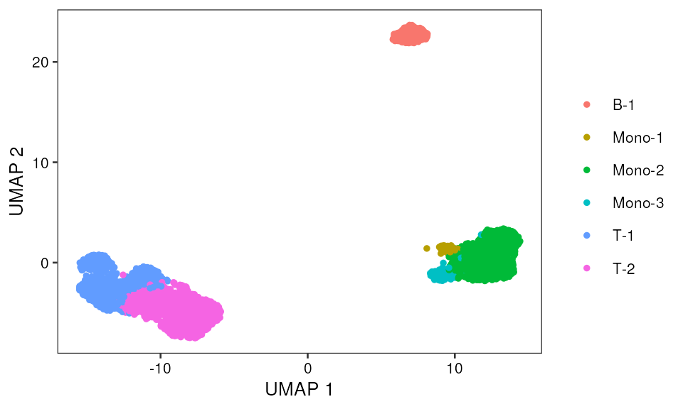
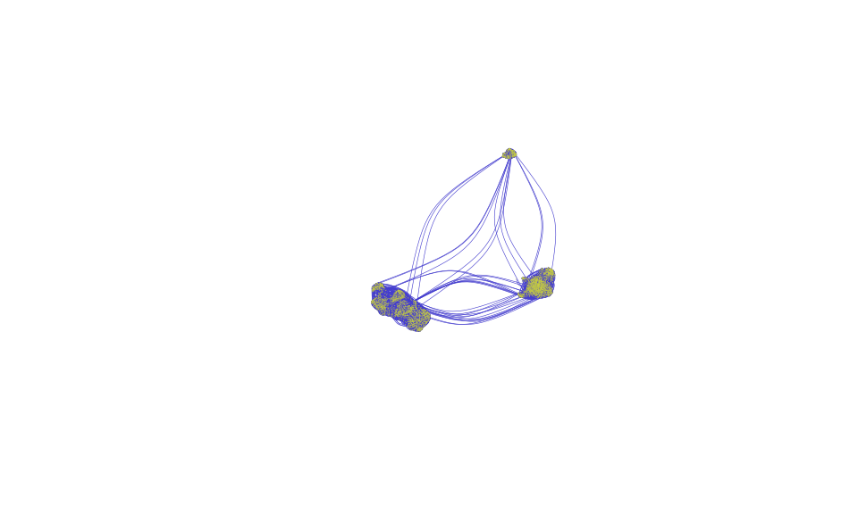
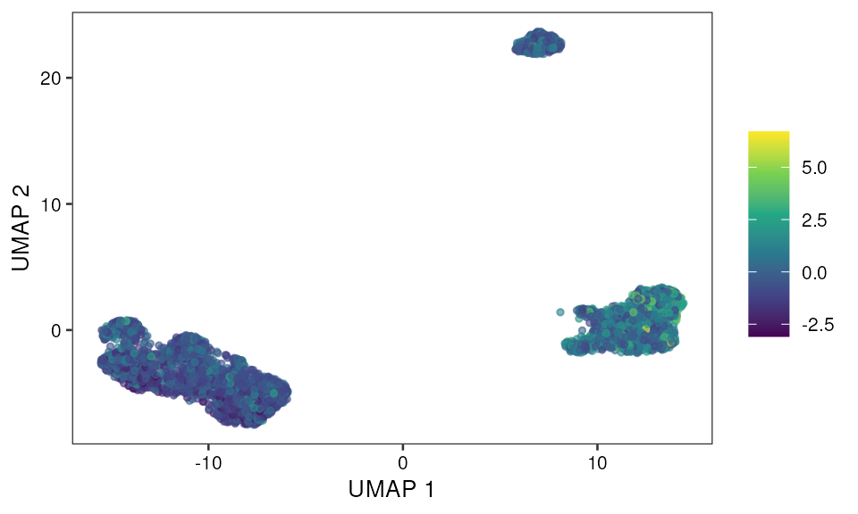
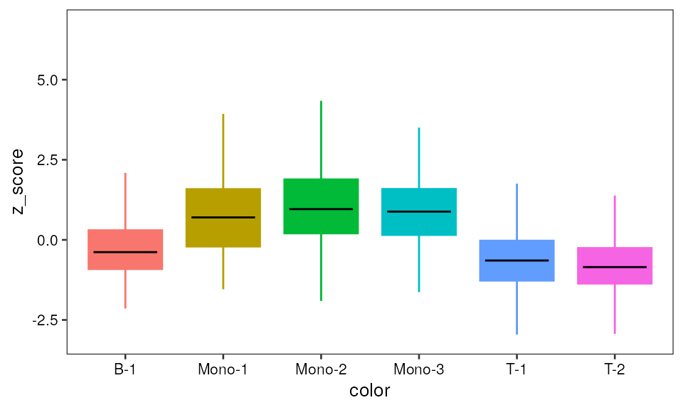
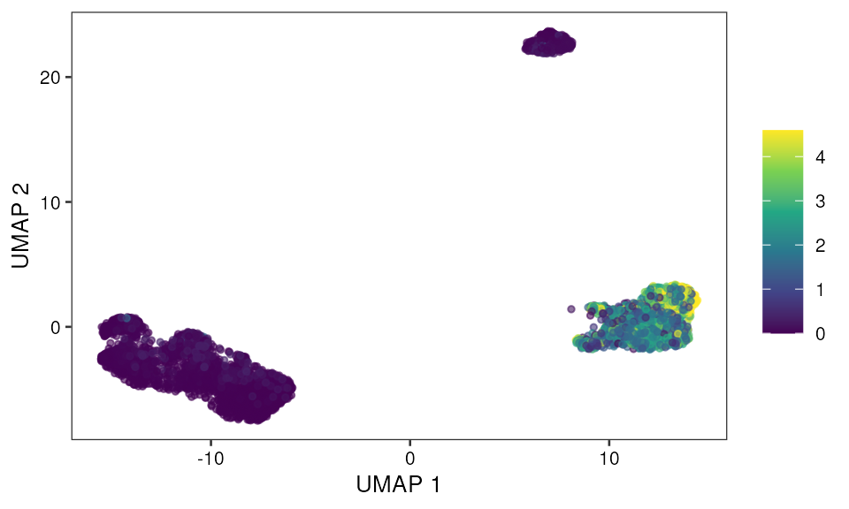
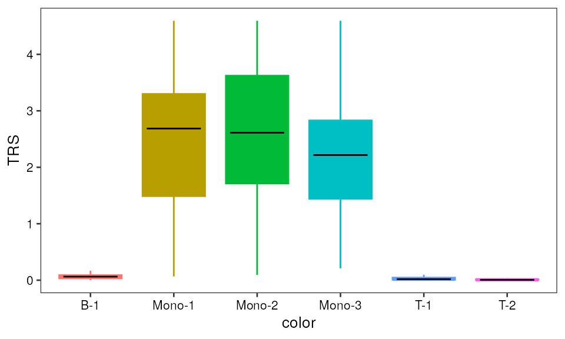
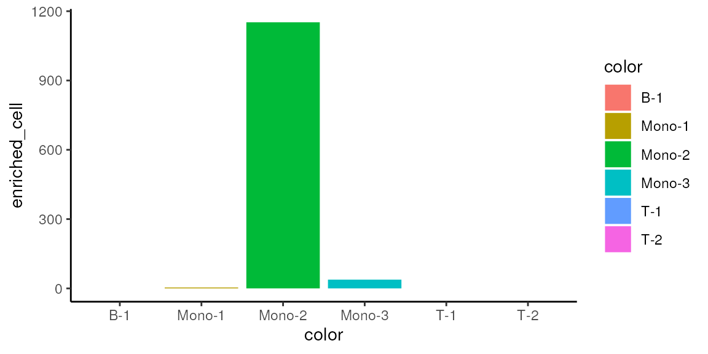
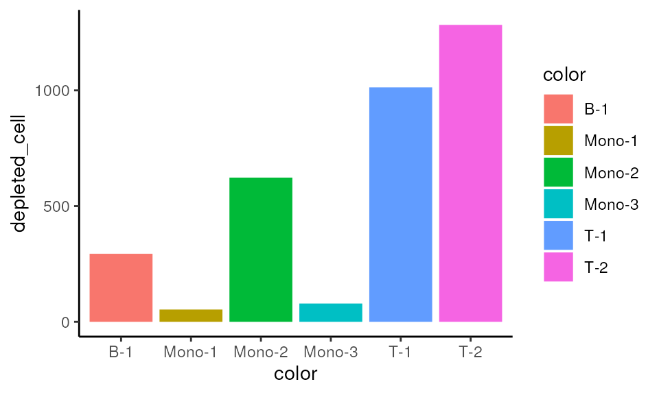

This vignette covers the main function and workflow of SCAVENGE. The standard processed input data including fine-mapped variants and single-cell epigenomic profiles. For fine-mapped variants of the trait of interest, we typically need information of genomic locations of variants and their corresponding posterior propability of causality. A peak-by-cell matrix of scATAC-seq profiles is needed. To walk through the workflow of SCAVENGE, we provided a blood cell trait of monocyte count and a 10X PBMC dataset as an example.
library(SCAVENGE)
library(chromVAR)
library(gchromVAR)
library(BuenColors)
library(SummarizedExperiment)
library(data.table)
library(dplyr)
library(BiocParallel)
library(BSgenome.Hsapiens.UCSC.hg19)
library(igraph)
set.seed(9527)The PBMC data was processed using ArchR package. The peak-by-cell count matrix and corresponding meta data were extracted and stored in a RangedSummarizedExperiment object (for more details please follow our paper). The typical input of fine-mapped data for SCAVENGE or g-chromVAR can be found here (https://github.com/sankaranlab/SCAVENGE-reproducibility/tree/main/data/finemappedtraits_hg19). You can use this (trait_import <- importBedScore(rowRanges(SE_pbmc5k), trait_file, colidx=5)) to import your fine-mapped data into SummarizedExperiment when you have your data ready (trait_file is the path of your file).
trait_import <- example_data(name="mono.PP001.bed")
SE_pbmc5k <- example_data(name="pbmc5k_SE.rda")
SE_pbmc5k <- addGCBias(object = SE_pbmc5k,
genome = BSgenome.Hsapiens.UCSC.hg19::BSgenome.Hsapiens.UCSC.hg19)
SE_pbmc5k_bg <- getBackgroundPeaks(object = SE_pbmc5k,
niterations = 200)
SE_pbmc5k_DEV <- computeWeightedDeviations(object = SE_pbmc5k,
weights = trait_import,
background_peaks = SE_pbmc5k_bg)Reformat results
z_score_mat <- data.frame(SummarizedExperiment::colData(SE_pbmc5k),
z_score=t(SummarizedExperiment::assays(SE_pbmc5k_DEV)[["z"]]) |> c())
head(z_score_mat)## names x y color
## input1#GTCACGGAGCTCGGCT-1 input1#GTCACGGAGCTCGGCT-1 11.71388 1.903179 Mono-2
## input1#CTGAATGAGCAGAATT-1 input1#CTGAATGAGCAGAATT-1 -13.86186 -4.616170 T-1
## input1#CCTGCTACAATGGCAG-1 input1#CCTGCTACAATGGCAG-1 10.90323 1.913244 Mono-2
## input1#TCAGGTAAGAGCAGCT-1 input1#TCAGGTAAGAGCAGCT-1 -13.64482 -4.757390 T-1
## input1#GAGTGAGTCGGTCTCT-1 input1#GAGTGAGTCGGTCTCT-1 10.77266 1.872978 Mono-2
## input1#AGGCCCAAGTCTGCTA-1 input1#AGGCCCAAGTCTGCTA-1 -13.88653 -4.610587 T-1
## color2 sample cell_cluster z_score
## input1#GTCACGGAGCTCGGCT-1 C5 input1 C5 0.3950389
## input1#CTGAATGAGCAGAATT-1 C1 input1 C1 0.0984394
## input1#CCTGCTACAATGGCAG-1 C5 input1 C5 0.3504030
## input1#TCAGGTAAGAGCAGCT-1 C1 input1 C1 -2.7724179
## input1#GAGTGAGTCGGTCTCT-1 C5 input1 C5 -0.4360599
## input1#AGGCCCAAGTCTGCTA-1 C1 input1 C1 -2.1425049
seed_idx <- seedindex(z_score = z_score_mat$z_score,
percent_cut = 0.05)## Cells with enriched P < 0.05: 612## Percent: 13.42%## The top 5% of cells (N=228) were selected as seed cellscalculate scale factor
scale_factor <- cal_scalefactor(z_score = z_score_mat$z_score,
percent_cut = 0.01)## Scale factor is calculating from most enriched 1% of cells.Calculate tfidf-mat
peak_by_cell_mat <- SummarizedExperiment::assay(SE_pbmc5k)
tfidf_mat <- tfidf(bmat=peak_by_cell_mat,
mat_binary=TRUE,
TF=TRUE,
log_TF=TRUE)## [info] binarize matrix## [info] calculate tf## [info] calculate idf## [info] fast log tf-idfCalculate lsi-mat
lsi_mat <- do_lsi(mat = tfidf_mat,
dims = 30)## SVD analysis of TF-IDF matrixPlease be sure that there is no potential batch effects for
cell-to-cell graph construction. If the cells are from different samples
or different conditions etc., please consider using Harmony analysis
(HarmonyMatrix from Harmony
package). Typically you could take the lsi_mat as the input with
parameter do_pca = FALSE and provide meta data describing
extra data such as sample and batch for each cell. Finally, a
harmony-fixed LSI matrix can be used as input for the following
analysis.
Calculate m-knn graph
mutualknn30 <- getmutualknn(lsimat = lsi_mat,
num_k = 30)
np_score <- randomWalk_sparse(intM = mutualknn30,
queryCells = rownames(mutualknn30)[seed_idx],
gamma = 0.05)Trait relevant score (TRS) with scaled and
normalized
A few cells are singletons are removed from further analysis, this will
lead very few cells be removed for the following analysis. You can
always recover those cells with a unified score of 0 and it will not
impact the following analysis.
omit_idx <- np_score==0
sum(omit_idx)## [1] 23
mutualknn30 <- mutualknn30[!omit_idx, !omit_idx]
np_score <- np_score[!omit_idx]
TRS <- capOutlierQuantile(x = np_score,
q_ceiling = 0.95) |> max_min_scale()
TRS <- TRS * scale_factor
mono_mat <- data.frame(z_score_mat[!omit_idx, ],
seed_idx[!omit_idx],
np_score,
TRS)
head(mono_mat)## names x y color
## input1#GTCACGGAGCTCGGCT-1 input1#GTCACGGAGCTCGGCT-1 11.71388 1.903179 Mono-2
## input1#CTGAATGAGCAGAATT-1 input1#CTGAATGAGCAGAATT-1 -13.86186 -4.616170 T-1
## input1#CCTGCTACAATGGCAG-1 input1#CCTGCTACAATGGCAG-1 10.90323 1.913244 Mono-2
## input1#TCAGGTAAGAGCAGCT-1 input1#TCAGGTAAGAGCAGCT-1 -13.64482 -4.757390 T-1
## input1#GAGTGAGTCGGTCTCT-1 input1#GAGTGAGTCGGTCTCT-1 10.77266 1.872978 Mono-2
## input1#AGGCCCAAGTCTGCTA-1 input1#AGGCCCAAGTCTGCTA-1 -13.88653 -4.610587 T-1
## color2 sample cell_cluster z_score
## input1#GTCACGGAGCTCGGCT-1 C5 input1 C5 0.3950389
## input1#CTGAATGAGCAGAATT-1 C1 input1 C1 0.0984394
## input1#CCTGCTACAATGGCAG-1 C5 input1 C5 0.3504030
## input1#TCAGGTAAGAGCAGCT-1 C1 input1 C1 -2.7724179
## input1#GAGTGAGTCGGTCTCT-1 C5 input1 C5 -0.4360599
## input1#AGGCCCAAGTCTGCTA-1 C1 input1 C1 -2.1425049
## seed_idx..omit_idx. np_score TRS
## input1#GTCACGGAGCTCGGCT-1 FALSE 3.804691e-05 0.213939514
## input1#CTGAATGAGCAGAATT-1 FALSE 2.209024e-07 0.001187911
## input1#CCTGCTACAATGGCAG-1 FALSE 6.088393e-05 0.342385858
## input1#TCAGGTAAGAGCAGCT-1 FALSE 2.220132e-07 0.001194159
## input1#GAGTGAGTCGGTCTCT-1 FALSE 4.785297e-05 0.269093513
## input1#AGGCCCAAGTCTGCTA-1 FALSE 2.572135e-07 0.001392142Cell type annotation
p <- ggplot(data=mono_mat, aes(x, y, color=color)) +
geom_point(size=1, na.rm = TRUE) +
pretty_plot() +
theme(legend.title = element_blank()) +
labs(x="UMAP 1",y="UMAP 2")
p
Visualize cell-to-cell graph if you have low-dimensional coordinates such as UMAP1 and UMAP2
mutualknn30_graph <- graph_from_adjacency_matrix(adjmatrix = mutualknn30,
mode = "undirected",
diag = FALSE)
igraph::plot.igraph(x = mutualknn30_graph,
vertex.size=0.8,
vertex.label=NA,
vertex.color=adjustcolor("#c7ce3d", alpha.f = 1),
vertex.frame.color=NA,
edge.color=adjustcolor("#443dce", alpha.f = 1),
edge.width=0.3, edge.curved=.5,
layout=as.matrix(data.frame(mono_mat$x, mono_mat$y)))
p1 <- ggplot(data=mono_mat, aes(x, y, color=z_score)) +
geom_point(size=1, na.rm = TRUE, alpha = 0.6) +
scale_color_viridis_c() +
scale_alpha() +
pretty_plot() +
theme(legend.title = element_blank()) +
labs(x="UMAP 1", y="UMAP 2")
p1Bar plot
pp1 <- ggplot(data=mono_mat, aes(x=color, y=z_score)) +
geom_boxplot(aes(fill=color, color=color), outlier.shape=NA) +
guides(fill=FALSE) +
pretty_plot(fontsize = 10) +
stat_summary(geom = "crossbar", width=0.65, fatten=0, color="black",
fun.data = function(x){ return(c(y=median(x), ymin=median(x), ymax=median(x))) }) + theme(legend.position = "none")
pp1
p2 <- ggplot(data=mono_mat, aes(x, y, color=TRS)) +
geom_point(size=1, na.rm = TRUE, alpha = 0.6) +
scale_color_viridis_c() +
scale_alpha() + pretty_plot() +
theme(legend.title = element_blank()) +
labs(x="UMAP 1", y="UMAP 2")
p2Bar plot
pp2 <- ggplot(data=mono_mat, aes(x=color, y=TRS)) +
geom_boxplot(aes(fill=color, color=color), outlier.shape=NA) +
guides(fill=FALSE) +
pretty_plot(fontsize = 10) +
stat_summary(geom = "crossbar", width=0.65, fatten=0, color="black", fun.data = function(x){ return(c(y=median(x), ymin=median(x), ymax=median(x))) }) + theme(legend.position = "none")
pp2
About 2 mins
please set @mycores >= 1 and @permutation_times >= 1,000 in the real
setting
mono_permu <- get_sigcell_simple(knn_sparse_mat=mutualknn30,
seed_idx=mono_mat$seed_idx,
topseed_npscore=mono_mat$np_score,
permutation_times=100, # Increase to >=1000 in practice
true_cell_significance=0.05,
rda_output=FALSE,
# mycores=8,# Increase in practice
rw_gamma=0.05)
mono_mat2 <- data.frame(mono_mat, mono_permu)Enriched cells
mono_mat2 |>
dplyr::group_by(color) |>
dplyr::summarise(enriched_cell=sum(true_cell_top_idx)) |>
ggplot(aes(x=color, y=enriched_cell, fill=color)) +
geom_bar(stat="identity") +
theme_classic()
Depleted cells
mono_mat2$rev_true_cell_top_idx <- !mono_mat2$true_cell_top_idx
mono_mat2 |>
dplyr::group_by(color) |>
dplyr::summarise(depleted_cell=sum(rev_true_cell_top_idx)) |>
ggplot(aes(x=color, y=depleted_cell, fill=color)) +
geom_bar(stat="identity") +
theme_classic()
utils::sessionInfo()## R Under development (unstable) (2023-02-16 r83857)
## Platform: x86_64-pc-linux-gnu (64-bit)
## Running under: Ubuntu 22.04.1 LTS
##
## Matrix products: default
## BLAS: /usr/lib/x86_64-linux-gnu/openblas-pthread/libblas.so.3
## LAPACK: /usr/lib/x86_64-linux-gnu/openblas-pthread/libopenblasp-r0.3.20.so; LAPACK version 3.10.0
##
## locale:
## [1] LC_CTYPE=en_US.UTF-8 LC_NUMERIC=C
## [3] LC_TIME=en_US.UTF-8 LC_COLLATE=en_US.UTF-8
## [5] LC_MONETARY=en_US.UTF-8 LC_MESSAGES=en_US.UTF-8
## [7] LC_PAPER=en_US.UTF-8 LC_NAME=C
## [9] LC_ADDRESS=C LC_TELEPHONE=C
## [11] LC_MEASUREMENT=en_US.UTF-8 LC_IDENTIFICATION=C
##
## time zone: UTC
## tzcode source: system (glibc)
##
## attached base packages:
## [1] stats4 stats graphics grDevices utils datasets methods
## [8] base
##
## other attached packages:
## [1] igraph_1.4.0 BSgenome.Hsapiens.UCSC.hg19_1.4.3
## [3] BSgenome_1.67.4 rtracklayer_1.59.1
## [5] Biostrings_2.67.0 XVector_0.39.0
## [7] BiocParallel_1.33.9 dplyr_1.1.0
## [9] data.table_1.14.8 SummarizedExperiment_1.29.1
## [11] Biobase_2.59.0 GenomicRanges_1.51.4
## [13] GenomeInfoDb_1.35.15 IRanges_2.33.0
## [15] S4Vectors_0.37.3 BiocGenerics_0.45.0
## [17] MatrixGenerics_1.11.0 matrixStats_0.63.0
## [19] BuenColors_0.5.6 ggplot2_3.4.1
## [21] MASS_7.3-58.2 gchromVAR_0.3.2
## [23] chromVAR_1.21.0 SCAVENGE_1.0.2
## [25] BiocStyle_2.27.1
##
## loaded via a namespace (and not attached):
## [1] jsonlite_1.8.4 magrittr_2.0.3
## [3] farver_2.1.1 rmarkdown_2.20
## [5] fs_1.6.1 BiocIO_1.9.2
## [7] zlibbioc_1.45.0 ragg_1.2.5
## [9] vctrs_0.5.2 memoise_2.0.1
## [11] Rsamtools_2.15.1 RCurl_1.98-1.10
## [13] htmltools_0.5.4 CNEr_1.35.0
## [15] sass_0.4.5 pracma_2.4.2
## [17] bslib_0.4.2 htmlwidgets_1.6.1
## [19] desc_1.4.2 plyr_1.8.8
## [21] plotly_4.10.1 cachem_1.0.6
## [23] GenomicAlignments_1.35.0 mime_0.12
## [25] lifecycle_1.0.3 pkgconfig_2.0.3
## [27] Matrix_1.5-3 R6_2.5.1
## [29] fastmap_1.1.0 GenomeInfoDbData_1.2.9
## [31] shiny_1.7.4 digest_0.6.31
## [33] colorspace_2.1-0 TFMPvalue_0.0.9
## [35] AnnotationDbi_1.61.0 rprojroot_2.0.3
## [37] irlba_2.3.5.1 textshaping_0.3.6
## [39] RSQLite_2.3.0 labeling_0.4.2
## [41] seqLogo_1.65.0 fansi_1.0.4
## [43] httr_1.4.4 compiler_4.3.0
## [45] withr_2.5.0 bit64_4.0.5
## [47] DBI_1.1.3 highr_0.10
## [49] R.utils_2.12.2 poweRlaw_0.70.6
## [51] DelayedArray_0.25.0 rjson_0.2.21
## [53] gtools_3.9.4 caTools_1.18.2
## [55] tools_4.3.0 httpuv_1.6.9
## [57] R.oo_1.25.0 glue_1.6.2
## [59] restfulr_0.0.15 promises_1.2.0.1
## [61] grid_4.3.0 reshape2_1.4.4
## [63] TFBSTools_1.37.0 generics_0.1.3
## [65] gtable_0.3.1 tzdb_0.3.0
## [67] R.methodsS3_1.8.2 nabor_0.5.0
## [69] tidyr_1.3.0 hms_1.1.2
## [71] utf8_1.2.3 RANN_2.6.1
## [73] pillar_1.8.1 stringr_1.5.0
## [75] later_1.3.0 lattice_0.20-45
## [77] bit_4.0.5 annotate_1.77.0
## [79] tidyselect_1.2.0 DirichletMultinomial_1.41.0
## [81] GO.db_3.16.0 miniUI_0.1.1.1
## [83] knitr_1.42 bookdown_0.32
## [85] xfun_0.37 DT_0.27
## [87] stringi_1.7.12 lazyeval_0.2.2
## [89] yaml_2.3.7 evaluate_0.20
## [91] codetools_0.2-19 tibble_3.1.8
## [93] BiocManager_1.30.19 cli_3.6.0
## [95] xtable_1.8-4 systemfonts_1.0.4
## [97] munsell_0.5.0 jquerylib_0.1.4
## [99] Rcpp_1.0.10 png_0.1-8
## [101] XML_3.99-0.13 parallel_4.3.0
## [103] ellipsis_0.3.2 pkgdown_2.0.7
## [105] readr_2.1.4 blob_1.2.3
## [107] bitops_1.0-7 viridisLite_0.4.1
## [109] scales_1.2.1 purrr_1.0.1
## [111] crayon_1.5.2 rlang_1.0.6
## [113] KEGGREST_1.39.0